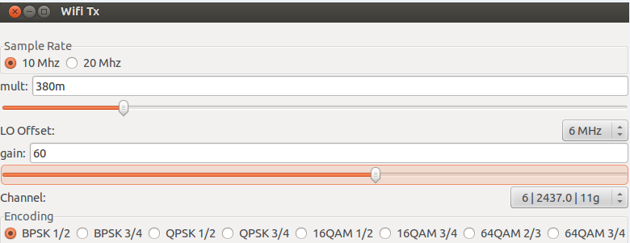
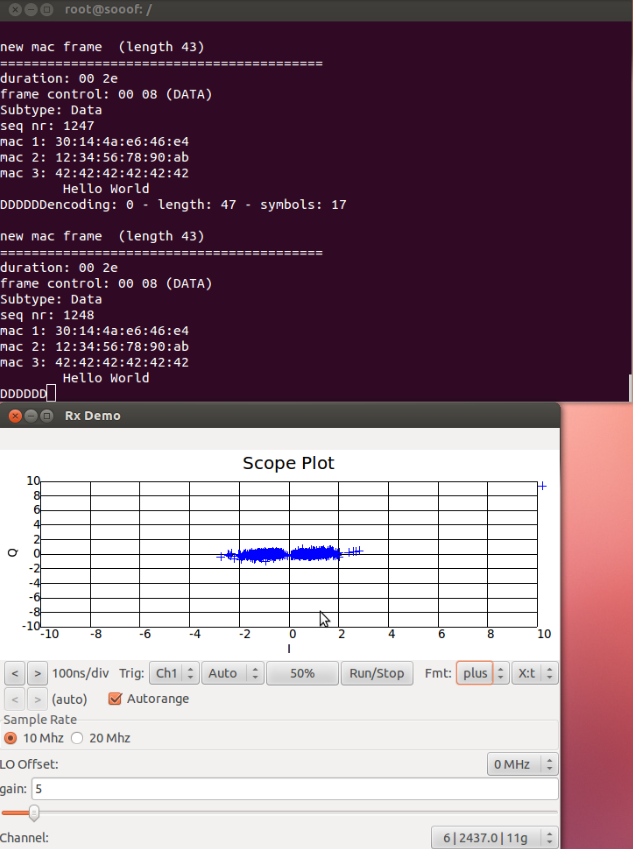
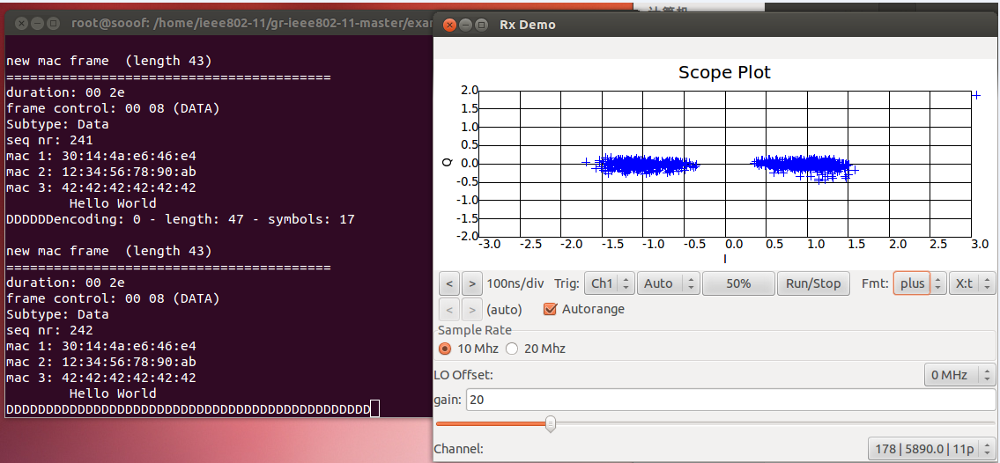

XCVR2450测试文档
xcvr2450

XCVR2450介绍：
XCVR2450的频率范围：RX：2.4-2.5GHz / 4.9-5.9GHz (100mW)
TX:2.4-2.5GHz / 4.9-5.9GHz (100mW)
刷写与测试环境：
USRP N210系统镜像，并安装gr-ieee802.11源码
设备要求：
两台装有USRPN210系统镜像环境的电脑，两台USRP N210设备，两个6V电源，两根网线。
测板思想：
由于子板XCVR2450的收发是RX：2.4-2.5GHz / 4.9-5.9GHz (100mW) TX:2.4-2.5GHz / 4.9-5.9GHz (100mW)，所以多测试几个这个范围内的几个频率的收发就可以测试该XCVR2450的好坏。以下我是用的2450MHz和5000MHz为例做的测试。
重写XCVR2450程序命令
使用USRP N210烧写子板XCVR2450插入子板后运行下面的命令：
在sudo su下运行
cd /usr/local/lib/uhd/utils
./usrp_burn_db_eeprom --id=0x0061 --unit=RX --args=”addr=192.168.10.3” --solt=”A”
./usrp_burn_db_eeprom --id=0x0060 --unit=TX --args=”addr=192.168.10.3” --solt=”A”
注：1、<args>是设备的地址参数（如果只有一个usrp的话，它便是可选项）。
2、<slot>是子板插槽的名称（如果usrp只有一个插槽solt的话，它便是可选项）。
3、如果要加serial号，可在上面命令中加入 –ser=一个数就可以了。
收发信号测试
使用USRP N210母版用uhd相关程序对子板XCVR2450进行测试。
测试方法一：
1、测发射信号
在一台电脑上运行：
在sudo su下运行
cd /usr/local/bin
./uhd_siggen --sine –f 2450M –A TX/RX (测试信号发射)
和
./uhd_siggen --sine –f 5000M –A TX/RX (测试信号发射)
通过频谱仪观察是否有波形，若接收到信号频谱仪上会显示相应的波形，标识该子板发射信号好使，否则不好使。
2、测接收信号
将设备与电脑连接好。
1）、一台电脑上运行：
在sudo su下运行
cd /usr/local/share/gnuradio/examples/digital/narrowband/
./benchmark_tx.py –f 2450M
或
./benchmark_tx.py –f 5000M
2）、另一台电脑上运行：
在sudo su下运行
cd /usr/local/bin
./uhd_fft –f 2450M(默认接收信号用的是RX2天线)
或
./uhd_fft –f 5000M(默认接收信号用的是RX2天线)
如果接收到信号则会出现信号波形，表示XCVR2450的接收好使，否则不好使。
XCVR2450实例演示
将两台电脑和两台设备连接（下面终端输入的命令都是在root用户下的）
一、测试2.4-2.5GHz频段
一台电脑输入下面命令
ieee802-11/gr-ieee802-11-master/examples#
./wifi_tx.py
会出现图-1

图-1
用鼠标单机图-1 调节wifi发射频率。

另一台电脑输入下面命令
ieee802-11/gr-ieee802-11-master/examples#
./rx_demo.py
出现图-2

图-2
鼠标点击调节和发射一样的频率，终端出现Hello World
表示发射接收成功。（图-2表示成功）

二、测试4.9-5.9GHz频段
一台电脑输入下面命令
ieee802-11/gr-ieee802-11-master/examples#
./wifi_tx.py
会出现图-3

图-3
用鼠标单机图-3 调节wifi发射频率。

另一台电脑输入下面命令
ieee802-11/gr-ieee802-11-master/examples#
./rx_demo.py
出现图-4

图-4
鼠标点击调节和发射一样的频率，终端出现Hello World
表示发射接收成功。（图-4表示成功）